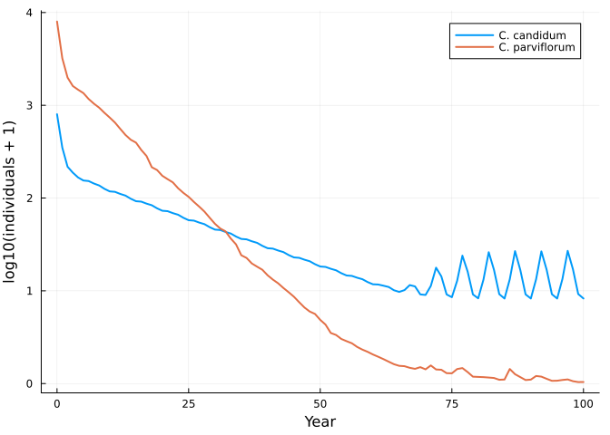
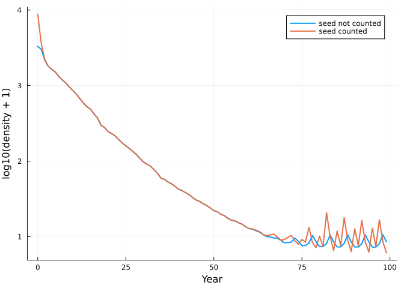

Two orchids: reproducing an adapt3 community projection
Simon Frost
ENV["GKSwstype"] = "100"
using MatrixCommunityModels
using PlotsThe model
The R package adapt3 (Shefferson 2026) projects several matrix population models against a common density. Its community-projection vignette uses two lady’s slipper orchids, Cypripedium candidum and C. parviflorum, each with nine stages (dormant seed SD, protocorm P1, seedling SL, dormant adult D, and five sizes of flowering adult) and one matrix per study year, estimated from field data with the R package lefko3.
In adapt3 the community is specified by four parallel lists: matrices, start vectors, density frames keyed by matrix element, and equivalence frames. Here the same information is three statements about each species:
- its transitions cycle through the annual matrices (the environment of step
tis the year counter); - reproduction into
SDandP1is multiplied by Ricker terms,0.5 exp(-N)and1.2 exp(-2N), whereNis the total of thedensitypool; - every stage except dormant seed occupies the
densitypool with weight one (adapt3’s equivalence frame).
m = cypripedium_model()
m.communityOpenCommunity(candidum, parviflorum; pools = density)The estimated matrices are shipped as data (data/cypripedium), since estimating them needs the R workflow. The transitions that read the pool are the ones into SD and P1 from flowering stages:
sp = species(m.community, :candidum)
[(t.name, t.kind) for t in sp.transitions if t.to in (:SD, :P1) && t.from in (:XSm, :Sm, :Md, :Lg, :XLg)]10-element Vector{Tuple{Symbol, Symbol}}:
(:XSm_to_SD, :fecundity)
(:XSm_to_P1, :survival)
(:Sm_to_SD, :fecundity)
(:Sm_to_P1, :survival)
(:Md_to_SD, :fecundity)
(:Md_to_P1, :survival)
(:Lg_to_SD, :fecundity)
(:Lg_to_P1, :survival)
(:XLg_to_SD, :fecundity)
(:XLg_to_P1, :survival)Projection
sol = project(m.community, m.n0, m.envs)
totals = [sum(sol[:candidum]; dims = 2) sum(sol[:parviflorum]; dims = 2)]
plot(sol.t, log10.(totals .+ 1); label = ["C. candidum" "C. parviflorum"], xlabel = "Year",
ylabel = "log10(individuals + 1)", lw = 2)
With these Ricker terms recruitment is almost completely suppressed while any appreciable number of plants is present (exp(-N) with N in the hundreds), so both populations decline, and C. parviflorum shows brief bursts of recruitment when the community becomes very small.
Agreement with adapt3
The reference files were produced by project3() in adapt3 2.0.9 from the vignette’s own objects (test/reference/R/run_adapt3_reference.R). They hold the size of each population and the aggregate density at each time.
function reference(tag)
file = joinpath(pkgdir(MatrixCommunityModels), "test", "reference", "adapt3_$(tag)_N.csv")
permutedims(reduce(hcat, [parse.(Float64, split(l, ",")[2:4]) for l in readlines(file)[2:end]]))
end
ref = reference("continuous")
(max_scaled_difference = maximum(abs.(totals .- ref[:, 1:2]) ./ max.(ref[:, 1:2], 1.0)),
density_matches = sol.pools[1:100, 1] ≈ ref[1:100, 3])(max_scaled_difference = 8.268022275869569e-16, density_matches = true)The vignette itself floors the stage vectors to whole individuals each step (integeronly = TRUE). That is a threshold applied after the projection:
mi = cypripedium_model(integeronly = true)
soli = project(mi.community, mi.n0, mi.envs)
totalsi = [sum(soli[:candidum]; dims = 2) sum(soli[:parviflorum]; dims = 2)]
totalsi == reference("vignette")[:, 1:2]trueInt.(totalsi[1:12, :])'2×12 adjoint(::Matrix{Int64}) with eltype Int64:
800 347 213 180 157 143 138 128 120 108 100 95
8000 3215 1987 1608 1464 1344 1158 1028 928 815 723 635These are the numbers printed in the adapt3 vignette. C. candidum is extinct from year 30 and C. parviflorum from year 69.
Changing the dependency assumption
Because the weights are part of each species, the effect of an assumption can be seen by changing it in one place. If dormant seed counted toward density:
ma = cypripedium_model(equivalence = false)
sola = project(ma.community, ma.n0, ma.envs)
plot(sol.t[1:end-1], log10.([sol.pools[1:end-1, 1] sola.pools[1:end-1, 1]] .+ 1);
label = ["seed not counted" "seed counted"], xlabel = "Year", ylabel = "log10(density + 1)", lw = 2)
Reference
Shefferson, R. P. (2026). adapt3: Adaptive dynamics and community projection in the R programming language. Methods in Ecology and Evolution 17, 1719-1725. https://doi.org/10.1111/2041-210x.70298